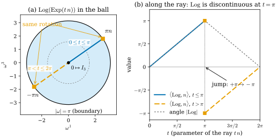
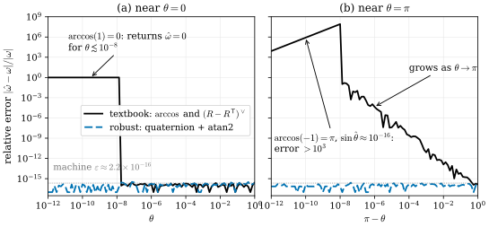
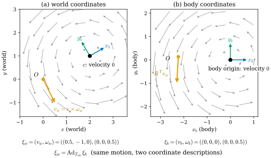

28.1 SO(3), SE(3), and Sim(3)
Goals
- \(\mathrm{SO}(3)\), \(\mathrm{SE}(3)\), \(\mathrm{Sim}(3)\)을 \(3 \times 3\) 또는 \(4 \times 4\) 행렬의 Lie group으로 쓰고, 차원 3, 6, 7과 Lie algebra의 hat/vee 표기를 설명할 수 있다.
- \(\mathrm{SE}(3)\)의 \(\exp\)를 \(V\) 행렬로 계산하고, twist의 \(v\)가 translation이 아니라 원점의 처음 속도라는 것(screw motion)을 그림으로 설명할 수 있다. \(\mathrm{Sim}(3)\)의 \(\exp\)도 닫힌 꼴로 쓸 수 있다.
- \(\log\)의 진짜 singularity(\(\theta = \pi\))과 공식의 겉보기 singularity(\(\theta = 0\))을 구별하고, 수치적으로 안전한 계산법을 고를 수 있다.
- adjoint \(\mathrm{Ad}_T\)로 twist를 다른 frame의 좌표로 옮기고, COLMAP·3DGS·NeRF가 pose를 \(T_{cw}\)와 \(T_{wc}\) 가운데 무엇으로 저장하는지 구별할 수 있다.
Prerequisites
- Section 0.6: Lie group, \(\mathrm{SO}(3)\)와 \([\omega]_\times\) (0.6.6), Rodrigues formula (0.6.7)(Example 0.6.7), 상자 In computer vision: 카메라 자세(\(\mathrm{SE}(3)\), gimbal lock, unit quaternion)
- Remark 0.8.4: \(\mathrm{SO}(3)\)의 bi-invariant metric과 \(d(R_1, R_2) = \abs{\log(R_1^{\mathsf T}R_2)}\), cut point(Section 0.8)
- (29.2.5): unit quaternion에서 rotation matrix를 만드는 식
- 3D vision 쪽: SfM과 SLAM의 camera pose, COLMAP의
images.txt[Schonberger16], NeRF의transforms.json[Mildenhall20]
Motivation
Chapter 27은 pose를 고정된 것으로 두고 카메라를 smooth map으로 보았다. world의 점을 rigid motion \(g(x) = Rx + T\)로 camera 좌표로 옮긴 뒤 투영하는 \(\varphi \circ g\)였다((27.1.3)). 그 장의 마지막 문장이 예고했듯이, 이 장은 고정해 두었던 pose 자체를 다룬다. SfM과 SLAM에서는 바로 그 rigid motion이 미지수다. 카메라가 움직일 때마다 다른 rigid motion이 생기고, bundle adjustment는 수백 개의 rigid motion을 한꺼번에 고친다.
rigid motion 하나는 회전 \(R\)과 translation \(t\)의 쌍이므로 수 12개(\(R\)의 9개와 \(t\)의 3개)로 저장하지만, 자유도는 6이다. Section 0.6에서 본 대로 이런 쌍 전체는 6차원 manifold이자 group인 \(\mathrm{SE}(3)\)다. 이 절은 그 group을 계산의 도구로 다룬다. 질문은 넷이다.
- \(\mathrm{SE}(3)\)와, monocular SLAM에서 쓰는 \(\mathrm{Sim}(3)\)은 어떤 행렬 group이고, tangent space(Lie algebra)는 무엇인가?
- Lie algebra의 원소(twist)에서 group의 원소로 가는 \(\exp\)는 어떻게 계산하는가? twist의 숫자들은 무엇을 뜻하는가?
- 거꾸로 가는 \(\log\)는 어디서 깨지고, 수치적으로는 어떻게 계산해야 안전한가?
- 같은 움직임을 world frame과 camera frame에서 쓰면 twist가 어떻게 바뀌는가? 그리고 COLMAP, 3DGS, NeRF는 pose를 어느 방향으로 저장하는가?
Three Matrix Groups
\(\mathrm{SO}(3) = \{R : R^{\mathsf T}R = I_3,\ \det R = 1\}\)은 3차원 compact Lie group이었다(Example 0.6.7). rigid motion과 similarity transformation도 같은 방식으로 행렬 group이 된다. 점 \(x\)를 \((x, 1) \in \R^4\)으로 쓰면 \(x \mapsto Rx + t\)가 \(4 \times 4\) 행렬의 곱이 되기 때문이다.
Definition 28.1.1 (\(\mathrm{SE}(3)\) and \(\mathrm{Sim}(3)\)).
여기서 \(R \in \mathrm{SO}(3)\), \(t \in \R^3\), \(s \gt 0\)이다. 둘 다 행렬 곱으로 group이 되고, \(\GL(4, \R)\)의 곱과 역이 smooth이므로 Lie group이다. \(\mathrm{SE}(3)\)을 special Euclidean group(특수 유클리드 군)이라 하고, 원소는 rigid motion \(x \mapsto Rx + t\)이다. \(\mathrm{Sim}(3)\)의 원소는 similarity transformation(닮음변환) \(x \mapsto sRx + t\)이다.
곱과 역을 성분으로 쓰면
\[ \begin{aligned} (R_1, t_1)(R_2, t_2) &= (R_1R_2,\ R_1t_2 + t_1), \\ (R, t)^{-1} &= (R^{\mathsf T},\ -R^{\mathsf T}t) \end{aligned} \]
이다. 차원은 parameter를 세면 된다. \(\mathrm{SE}(3)\)은 \(\mathrm{SO}(3)\)의 3과 \(t\)의 3을 합해 6차원, \(\mathrm{Sim}(3)\)은 scale 하나를 더해 7차원이다. manifold로서 \((R, t) \mapsto T\)는 \(\mathrm{SO}(3) \times \R^3\)에서 \(\mathrm{SE}(3)\)으로 가는 diffeomorphism이다. 그러나 group으로서는 곱이 아니다. 첫 식에서 \(t_2\)가 \(R_1\)에 의해 돌아간 뒤 더해지기 때문이다. 이런 구조를 semidirect product(반직접곱) \(\mathrm{SO}(3) \ltimes \R^3\)이라 한다. manifold로는 같고 group으로는 다르다는 이 차이가 Section 28.4에서 두 가지 pose 보간의 차이로 나타난다.
frame 첨자 규약(Conventions)으로 쓰면 곱은 좌표 변환의 연쇄다. COLMAP처럼 world에서 camera로 가는 \(T_{cw}\)를 저장하면 두 카메라 사이의 상대 pose는 \(T_{c_1c_2} = T_{c_1w}T_{c_2w}^{-1}\)이다. 첨자가 맞물리지 않는 곱(\(T_{c_1w}T_{c_2w}\))은 기하적 의미가 없다. 실무에서 가장 흔한 pose 버그가 이 첨자를 놓친 데서 생긴다(아래 Pose Conventions).
Lie Algebras, Hat, and Vee
\(I_4\)를 지나는 곡선 \(T(\tau) = \big(R(\tau), t(\tau)\big)\)를 \(\tau = 0\)에서 미분하면 \(\begin{pmatrix} R'(0) & t'(0) \\ 0 & 0 \end{pmatrix}\)이고, \(R'(0)\)은 skew-symmetric matrix다(Example 0.6.7). 따라서 \(\mathrm{SE}(3)\)의 tangent space at identity, 곧 Lie algebra(리 대수) \(\mathfrak{se}(3)\)은 이런 행렬 전체이고 6차원 vector space다. \(\mathrm{Sim}(3)\)에서는 \(s(\tau)R(\tau)\)를 미분하므로 왼쪽 위 블록에 \(s'(0)I_3\)이 더해진다. 좌표를 다음과 같이 정한다.
Remark 28.1.2 (hat and vee convention). 이 장에서 \(\mathfrak{so}(3)\), \(\mathfrak{se}(3)\), \(\mathfrak{sim}(3)\)의 원소는 다음 hat으로 \(\R^3\), \(\R^6\), \(\R^7\)과 동일시한다. vee \(\vee\)는 그 역이다.
\(\xi \in \R^6\)을 twist라 부른다. 이 순서(translation 쪽 먼저)는 Sophus와 [Sola18]를 따른 것이다. 라이브러리마다 순서가 다르므로 코드를 옮길 때 가장 먼저 확인할 것이다.
twist는 “속도”로 읽으면 뜻이 분명해진다. 곡선 \(T(\tau)\)가 \(T(0) = I_4\), \(T'(0) = \xi^\wedge\)이면, 시각 \(0\)에 점 \(x\)는 속도
로 움직인다. 각속도 \(\omega\)로 돌면서, 원점에 있는 점이 속도 \(v\)로 움직이는 rigid motion의 순간 속도장이다. \(v\)는 원점의 속도이므로, 원점을 어디에 두느냐에 따라 같은 움직임의 \(v\)가 달라진다. 이것이 아래 adjoint의 출발점이다.
Closed Forms of exp
\(\mathrm{SO}(3)\)의 \(\exp\)는 Rodrigues formula (0.6.7)였다. 증명의 핵심은 \(\Omega = [\omega]_\times\)가 \(\Omega^3 = -\theta^2\Omega\)를 만족해 급수가 \(I_3, \Omega, \Omega^2\)의 세 항으로 줄어든다는 것이다. \(\mathrm{SE}(3)\)에서도 같은 일이 일어난다.
Proposition 28.1.3 (exp on \(\mathrm{SE}(3)\)). \(\xi = (v, \omega)\), \(\theta = \abs{\omega}\), \(\Omega = [\omega]_\times\)이면
이다(\(\theta = 0\)이면 \(V = I_3\)). 곧 rotation 부분은 Rodrigues formula 그대로이고, translation 부분은 \(v\)가 아니라 \(Vv\)이다 [Strasdat10], [Sola18].
Derivation. \(\xi^\wedge\)의 거듭제곱은 \((\xi^\wedge)^k = \begin{pmatrix} \Omega^k & \Omega^{k-1}v \\ 0 & 0 \end{pmatrix}\) (\(k \ge 1\))이므로 \(\exp(\xi^\wedge)\)의 오른쪽 위 블록은 \(\sum_{k \ge 1}\Omega^{k-1}v/k! = \big(\sum_{m \ge 0}\Omega^m/(m+1)!\big)v\)이다. \(\Omega^3 = -\theta^2\Omega\)로 \(\Omega^{2j+1} = (-\theta^2)^j\Omega\), \(\Omega^{2j+2} = (-\theta^2)^j\Omega^2\)이므로 \(\Omega\)의 coefficient는 \(\sum_j (-1)^j\theta^{2j}/(2j+2)! = (1 - \cos\theta)/\theta^2\), \(\Omega^2\)의 coefficient는 \(\sum_j (-1)^j\theta^{2j}/(2j+3)! = (\theta - \sin\theta)/\theta^3\)이다. 같은 계산을 적분으로 쓰면 \(V = \int_0^1 \exp(u\Omega)\,du\)이다. \(V\)는 “회전을 \(0\)에서 \(\theta\)까지 고르게 평균한 것”이다.
\(V\)가 무엇을 하는지는 screw motion(나사 운동)으로 보면 보인다. \(\omega \ne 0\)이면 one-parameter subgroup \(\tau \mapsto \mathrm{Exp}(\tau\xi)\)는 한 직선(screw axis) 둘레로 돌면서 그 직선을 따라 미끄러지는 운동이다. 축은 점 \(q = \omega \times v/\theta^2\)를 지나고 방향이 \(\omega\)이며, 한 radian 돌 때 축 방향으로 \(h = \inner{\omega}{v}/\theta^2\)만큼 간다(pitch). 실제로 \(v = q \times \omega + h\,\omega\)로 분해되고, (28.1.3)에서 축 위의 점 \(q\)의 속도는 \(\omega \times q + v = h\,\omega\)로 축 방향뿐이다. 모든 rigid motion(\(R \ne I_3\))이 이런 screw motion이라는 고전적 사실을 Chasles's theorem이라 한다. twist와 그 exponential coordinates는 [Ma04, Ch. 2]가 자세히 다룬다. 원점은 축에서 떨어져 있으므로 helix를 그린다.
Example 28.1.4 (screw motion and the running-example helix). \(\omega = e_3\), \(v = (0, a, b)\)(\(a = 1\), \(b = 0.3\))인 twist를 생각하자. \(q = e_3 \times (0, a, b) = (-a, 0, 0)\), \(h = b\)이므로 screw axis는 직선 \(x = -a,\ y = 0\)이고 pitch는 \(b\)다. (28.1.4)로 계산하면 원점의 궤적은
\[ c(\tau) = \mathrm{Exp}(\tau\xi)\,0 = V(\tau\omega)(\tau v) = (a\cos\tau - a,\ a\sin\tau,\ b\tau) \]
이고, 이것은 running example의 helix \(\gamma(\tau) = (a\cos\tau, a\sin\tau, b\tau)\)를 \((-a, 0, 0)\)만큼 옮긴 것이다. \(c'(0) = (0, a, b) = v\)이므로 \(v\)는 원점의 처음 속도다. 반 바퀴 뒤의 translation은 \(c(\pi) = (-2a, 0, \pi b) = (-2, 0, 0.942)\)이고, “\(v\)를 translation으로 착각한” 값 \(\pi v = (0, \pi a, \pi b) = (0, 3.14, 0.942)\)과 전혀 다르다(Figure 28.1.1).
Verification: verify/v-28-1-so3-se3-sim3.py
![두 패널. 왼쪽 (a)는 3D 그림으로, 원점(τ = 0)에서 출발한 검은 곡선이 오른쪽 아래에서 왼쪽 위(τ = π)로 반 바퀴 휘어 올라가는 helix 조각이다. 곡선 위 다섯 곳에 파랑·초록·주홍 세 화살표로 된 좌표틀이 있고, 주홍 화살표는 늘 위를 향하며 파랑과 초록 화살표는 점점 돌아간다. τ = 0의 좌표틀에는 x, y, z라고 적혀 있다. 곡선 안쪽에 회색 세로 점선(screw axis)이 있다. 곡선의 그림자가 바닥(z = 0)에 옅은 회색 점선 반원으로 그려져 있고, 끝점에서 바닥으로 내린 회색 점선 옆에 'rise bπ ≈ 0.94'라고 적혀 있다. 원점에서 굵은 파란 화살표 v = c'(0)가 곡선에 접하게 나가고, 주황 화살표 t = V(πω)πv가 원점에서 곡선의 끝점까지 직선으로 간다. 오른쪽 (b)는 같은 것을 위에서 본 xy 평면 그림이다. 검은 반원이 (0, 0)에서 (−2, 0)까지 위쪽으로 돌고, 중심 (−1, 0)에 screw axis 표시가 있다. 원점에서 파란 화살표 v가 위(+y)로 짧게, 주황 화살표 t가 왼쪽으로 (−2, 0)까지, 회색 점선 화살표 πv가 위로 (0, 3.14)까지 길게 뻗는다.](figures/fig-28-1-1-screw-motion.svg)
Figure 28.1.1의 (b)를 먼저 보자. 원점은 \((0, 0)\)에서 출발해 \((-1, 0)\)을 중심으로 하는 반원을 따라 \((-2, 0)\)에 도착한다. 출발할 때의 방향은 파란 \(v\), 곧 \(+y\) 방향이다. 그러나 반 바퀴 뒤의 변위는 주황 화살표처럼 \(-x\) 방향이다. 회색 점선 \(\pi v\)는 “속도 \(v\)로 시간 \(\pi\)만큼 직진했다면” 도착했을 곳이다. (a)에서는 같은 원점이 반원을 따라 돌면서 위로 올라가는 helix 조각을 그린다. 바닥의 회색 그림자가 (b)의 반원이고, 끝점에서 내린 수직선의 길이 \(0.3\pi \approx 0.94\)가 그동안 축 방향으로 올라간 양이다. 좌표틀의 파랑·초록 축이 곡선을 따라 함께 돌아가고, 주홍 \(z\)축은 screw axis와 평행하게 그대로 위를 향한다. 회전 \(R(\tau)\)와 원점의 위치가 묶여서 움직이는 것, 이것이 \(\mathrm{SE}(3)\)의 one-parameter subgroup이다.
\(\mathrm{Sim}(3)\)에서도 급수는 닫힌 꼴이 된다. 왼쪽 위 블록이 \(\Omega + \sigma I_3\)이고 \(\sigma I_3\)은 \(\Omega\)와 교환하므로 rotation·scale 부분은 \(e^\sigma\exp(\Omega)\)이다. translation 부분은 \(W = \sum_{m \ge 0}(\Omega + \sigma I_3)^m/(m+1)! = \int_0^1 e^{\sigma u}\exp(u\Omega)\,du\)를 \(v\)에 곱한 것이다.
Proposition 28.1.5 (exp on \(\mathrm{Sim}(3)\)). \(\zeta = (v, \omega, \sigma)\), \(\theta = \abs{\omega} \ne 0\), \(\sigma \ne 0\)이면 \(\mathrm{Exp}(\zeta) = \begin{pmatrix} e^\sigma\exp(\Omega) & Wv \\ 0 & 1 \end{pmatrix}\)이고
이다 [Strasdat10]. \(\sigma \to 0\)이면 \(W \to V\)이고, \(\theta \to 0\)이나 \(\sigma \to 0\)에서는 극한값(Taylor 전개)을 쓴다.
이 식은 Strasdat의 논문(식 (22))과 Sophus의 구현(sophus/sim_details.hpp의 calcW)이 같은 꼴로 쓴다. 다만 논문의 7-vector는 \((\omega, \sigma, \upsilon)\) 순서이고, Sophus는 이 장과 같은 \((v, \omega, \sigma)\) 순서다. 여기서는 그 식을 행렬 지수의 급수와 수치로 대조했다(일반적인 \(\theta, \sigma\)에서 차이 \(10^{-12}\) 이하). 작은 \(\theta\)나 \(\sigma\)에서는 (28.1.5)를 그대로 계산하면 뺄셈에서 자릿수를 잃는다. 예를 들어 \(\sigma = 10^{-9}\)에서 \(e^\sigma - 1\)을 그대로 계산하면 상대오차가 약 \(10^{-7}\)이다. 이때는 \(\mathrm{expm1}\)과 급수로 계산하면 된다. \(W\)는 \(\omega\) 방향에서 \((e^\sigma - 1)/\sigma\)를, \(\omega\)에 수직인 평면에서 복소수 \((e^{\sigma + i\theta} - 1)/(\sigma + i\theta)\)를 곱하는 행렬이기 때문이다(Exercise 28.1.5의 계산과 같은 생각). verify는 이 방법으로 \(\theta, \sigma = 10^{-9}\)까지 확인했다.
Verification: verify/v-28-1-so3-se3-sim3.py
log and Its Singularities
\(\exp\)의 역이 \(\log\)이다. \(\mathrm{SO}(3)\)에서 회전각과 축은 trace와 skew-symmetric 부분으로 읽는다.
Proposition 28.1.6 (log on \(\mathrm{SO}(3)\)). \(R \in \mathrm{SO}(3)\)의 회전각 \(\theta \in [0, \pi]\)는 \(\cos\theta = (\tr R - 1)/2\)로 정해진다.
- \(0 \lt \theta \lt \pi\)이면 \(\mathrm{Log}(R)\)은 하나로 정해지고 \(\abs{\omega} \lt \pi\)이다:
- \(\theta = \pi\)이면 \(R = 2nn^{\mathsf T} - I_3\)(\(n\)은 unit 축)이고, \(\omega = \pm\pi n\) 둘 다 같은 \(R\)을 준다. \(n\)은 \((R + I_3)/2 = nn^{\mathsf T}\)의 0이 아닌 열에서 부호를 빼고 정해진다.
- \(\theta = 0\)이면 \(\omega = 0\)이다.
\(\mathrm{SE}(3)\)에서는 \(\omega = \mathrm{Log}(R)\)을 먼저 구하고 \(v = V(\omega)^{-1}t\)로 둔다. 여기서
이고, \(0 \le \theta \lt 2\pi\)에서 \(\det V \gt 0\)이다(Exercise 28.1.5). 따라서 \(\mathrm{SE}(3)\)의 \(\log\)는 rotation 부분과 같은 곳(\(\theta = \pi\))에서만 깨진다.
Derivation. Rodrigues formula에서 \(\tr\Omega = 0\), \(\tr\Omega^2 = -2\theta^2\)이므로 \(\tr R = 3 - 2(1 - \cos\theta) = 1 + 2\cos\theta\)이다. \(R - R^{\mathsf T}\)에서는 symmetric인 \(I_3\)과 \(\Omega^2\) 항이 지워지고 \(2\frac{\sin\theta}{\theta}\Omega\)만 남으므로 (28.1.6)이다. \(\theta = \pi\)이면 \(\sin\theta = 0\)이어서 이 정보가 사라지고, \(R = I_3 + 2[n]_\times^2 = 2nn^{\mathsf T} - I_3\)는 \(n\)과 \(-n\)에 대해 같다. \(V^{-1}\)은 (28.1.4)의 \(V\)와 곱해 \(I_3\)이 되는지 확인하면 된다(verify).
Figure 28.1.2는 이 singularity를 Tour의 ball 그림(Figure 0.6.4) 위에서 보인다.

Figure 28.1.2의 (a)에서 파란 선은 원점에서 경계의 \(\pi n\)까지 곧게 나간다. 그 점을 넘으면 같은 회전이 반대편 \(-\pi n\)으로 표시되므로, 주황 점선은 반대편 경계에서 다시 나타나 원점으로 돌아온다. (b)는 같은 것을 수로 본다. \(n\) 방향 성분이 \(t = \pi\)에서 \(+\pi\)에서 \(-\pi\)로 뛴다. 그러나 회색 회전각은 그 점에서 꺾일 뿐 끊어지지 않는다. Tour의 말로 하면, \(\theta = \pi\)인 회전 전체(경계 sphere에서 대척점을 같게 본 것, 곧 \(\RP^2\))는 \(I_3\)의 cut point(절단점)들이다(Section 0.8). \(I_3\)에서 그 회전으로 가는 최단 geodesic이 두 개(\(\pm\pi n\) 방향)이므로 \(\log\)가 하나로 정해지지 않는다.
수치 계산에서는 문제가 하나 더 있다. (28.1.6)은 \(\theta = 0\)에서 \(0/0\)이고, \(\arccos\)는 \(\pm 1\) 근처에서 기울기가 무한대다. \(\theta = 0\)은 기하적으로 아무 문제가 없는 점이므로 이것은 공식의 singularity다. Figure 28.1.3은 float64에서 이 차이를 잰다.

Figure 28.1.3의 (a)를 왼쪽에서 오른쪽으로 보자. 검은 선은 \(\theta \approx 10^{-8}\)까지 오차 1에 붙어 있다가 갑자기 machine \(\varepsilon\) 수준으로 떨어진다. 이 경계는 \((\tr R - 1)/2 = \cos\theta = 1 - \theta^2/2 + \cdots\)가 float64에서 정확히 \(1\)로 반올림되는 곳이다. \(1\) 바로 아래의 float64 간격은 \(\varepsilon/2\)이므로, \(\cos\theta\)만 보면 \(\theta^2/2 \lt \varepsilon/4\), 곧 \(\theta \lt \sqrt{\varepsilon/2} \approx 1.05 \times 10^{-8}\)에서 \(\arccos\)가 \(0\)을 돌려준다(행렬 성분과 trace의 반올림에 따라 경계는 조금 달라진다). 그 경계를 넘으면 \(\hat\theta\) 자체는 여전히 부정확하지만 \(\hat\theta/(2\sin\hat\theta) \approx \tfrac12\)이 거의 변하지 않으므로 \(\hat\omega\)는 정확하다. 인접한 두 프레임의 상대 회전, 수렴 직전의 update처럼 아주 작은 회전은 실제로 흔하다. (b)에서는 반대로 \(\pi\)에 가까워질수록 검은 선이 꾸준히 올라간다. 파란 점선은 양쪽 모두 바닥에 있다. 안전한 계산의 처방은 둘이다.
- 작은 각에서는 Taylor 전개. \(\theta/(2\sin\theta) = \tfrac12 + \theta^2/12 + O(\theta^4)\), quaternion을 만들 때의 \(\sin(\theta/2)/\theta = \tfrac12 - \theta^2/48 + \theta^4/3840 + O(\theta^6)\)처럼 coefficient를 급수로 계산한다(Sophus
SO3::expAndTheta는 \(\theta^2 \lt \varepsilon^2\)에서 바로 이 급수를 쓴다). exponential map parametrization의 실용적 계산을 정리한 [Grassia98]도 작은 각의 Taylor 전개와, \(\abs{\omega}\)가 \(2\pi\)의 배수(\(\exp\)의 differential이 퇴화하는 곳)에 가까워지지 않도록 \(\abs{\omega} \le \pi\)인 대표로 바꾸는 reparametrization을 쓴다. - 각은 \(\mathrm{atan2}\)로. \(\sin\)과 \(\cos\)를 함께 쓰면 \(\arccos\)나 \(\arcsin\) 하나만 쓸 때의 ill-conditioning이 없다. Sophus
SO3::logAndTheta는 quaternion \((q_0, q_{1:3})\)에서 \(2\,\mathrm{atan2}(\abs{q_{1:3}}, q_0)\)를 쓰고, \(q_0 \lt 0\)이면 두 인자의 부호를 바꾼 \(\mathrm{atan2}(-\abs{q_{1:3}}, -q_0)\)를 써서(\(-q\)를 쓰는 것과 같다) \(\abs{\theta} \le \pi\)로 맞춘다.
The Adjoint
(28.1.3)에서 twist는 속도장 \(x \mapsto \omega \times x + v\)였다. 같은 물리적 움직임을 다른 frame의 좌표로 쓰면 \(\omega\)는 회전되고, \(v\)는 “새 원점의 속도”로 바뀐다. 이 좌표 변환을 행렬 하나로 쓴 것이 adjoint다.
Definition 28.1.7 (adjoint). \(T = (R, t) \in \mathrm{SE}(3)\)에 대해 \(T\xi^\wedge T^{-1} = (\mathrm{Ad}_T\,\xi)^\wedge\)를 만족하는 linear map \(\mathrm{Ad}_T\colon \R^6 \to \R^6\)을 \(T\)의 adjoint representation(딸림표현) 행렬이라 한다. 순서 \(\xi = (v, \omega)\)에서
이다. \(\mathrm{SO}(3)\)에서는 \(R[\omega]_\times R^{\mathsf T} = [R\omega]_\times\)이므로 \(\mathrm{Ad}_R = R\)이다. \(\mathrm{Ad}_{T_1T_2} = \mathrm{Ad}_{T_1}\mathrm{Ad}_{T_2}\), \(\mathrm{Ad}_{T^{-1}} = (\mathrm{Ad}_T)^{-1}\)이 성립한다 [Sola18].
Derivation. \(T\xi^\wedge T^{-1} = \begin{pmatrix} R\Omega R^{\mathsf T} & Rv - R\Omega R^{\mathsf T}t \\ 0 & 0 \end{pmatrix}\)이고 \(R\Omega R^{\mathsf T} = [R\omega]_\times\), \(-[R\omega]_\times t = t \times R\omega = [t]_\times R\omega\)이므로 새 twist는 \((Rv + [t]_\times R\omega,\ R\omega)\)이다. 둘째 식은 \(T\exp(X)T^{-1} = \exp(TXT^{-1})\)(급수의 각 항에서 \(T^{-1}T\)가 지워진다)에서 나온다. 곱의 성질은 \(T_1T_2\,\xi^\wedge\,(T_1T_2)^{-1} = T_1(T_2\xi^\wedge T_2^{-1})T_1^{-1}\)에서 나온다.
\(T = T_{wb}\)라 하자. frame \(b\)의 좌표로 쓴 twist \(\xi_b\)는 world 좌표로 \(\xi_w = \mathrm{Ad}_{T_{wb}}\xi_b\)가 된다. 특히 frame \(b\)의 원점을 지나는 축 둘레의 순수한 회전 \(\xi_b = (0, \omega_b)\)는 world 좌표로 \(\xi_w = (c \times \omega_w,\ \omega_w)\)이다(\(c = t_{wb}\), \(\omega_w = R\omega_b\)). 회전뿐인 움직임인데 world twist에는 \(v_w \ne 0\)이 있다.

Figure 28.1.4의 두 패널을 나란히 보자. 회색 소용돌이는 똑같고, (a)에서는 \(c\) 둘레, (b)에서는 원점 둘레로 돈다. 소용돌이의 중심에 있는 점은 속도가 \(0\)이다. 그래서 frame \(b\)의 좌표로는 \(v_b = 0\)이지만, world 원점 \(O\)는 중심에서 \(\abs{c} = \sqrt5\)만큼 떨어져 있으므로 속력 \(0.5\sqrt5 \approx 1.12\)로 움직이고, 이것이 \(v_w\)다. \(\omega\)는 두 좌표에서 같은 축(여기서는 \(z\))을 가리킨다. adjoint가 하는 일은 이 “원점을 바꾸는 계산”과 축을 돌리는 계산을 한 행렬에 담는 것이다.
adjoint가 필요한 곳은 세 군데다.
- local과 global perturbation 사이. (28.1.8)을 다시 쓰면 \(\mathrm{Exp}(\xi)\,T = T\,\mathrm{Exp}(\mathrm{Ad}_{T^{-1}}\xi)\)이다. 왼쪽에서 곱한 perturbation과 오른쪽에서 곱한 perturbation은 \(\mathrm{Ad}\)만큼 다른 좌표다. 이것이 Section 28.2의 주제다.
- 불확실성의 이동. body frame에서 쓴 pose의 covariance \(\Sigma_b\)는 world frame에서 \(\mathrm{Ad}\,\Sigma_b\,\mathrm{Ad}^{\mathsf T}\)이다. COLMAP의
Rigid3d::Adjoint()가 이 용도의 행렬이다(주석에 “to propagate uncertainty”). 단 COLMAP의 이 행렬은 rotation을 먼저 쓰는 순서 \((\omega, v)\)에 맞춰 \(\begin{pmatrix} R & 0 \\ [t]_\times R & R \end{pmatrix}\)로 되어 있다. (28.1.8)과 같은 행렬의 블록 순서만 바꾼 것이다. - 속도의 이동. IMU가 재는 각속도는 body frame의 값이고, 궤적을 world에서 다룰 때는 \(\mathrm{Ad}\)로 옮긴다.
\(\mathrm{Sim}(3)\)의 adjoint도 같은 정의로 계산된다. 순서 \((v, \omega, \sigma)\)에서 \(S = (sR, t)\)의 adjoint는 \(\begin{pmatrix} sR & [t]_\times R & -t \\ 0 & R & 0 \\ 0 & 0 & 1 \end{pmatrix}\)이다(Sophus Sim3::Adj와 같고, verify에서 정의와 대조했다). 셋째 열의 \(-t\)는 이렇게 읽는다. body 좌표의 \(\zeta = (0, 0, \sigma)\)는 body 원점(world 좌표로 \(t\))을 중심으로 늘어나는 움직임 \(\dot x = \sigma(x - t)\)이고, world 원점은 그 중심에서 멀어지는 속도 \(-\sigma t\)를 가진다.
Verification: verify/v-28-1-so3-se3-sim3.py
Pose Conventions in COLMAP, 3DGS, and NeRF
pose를 \(T_{cw}\)로 저장할지 \(T_{wc}\)로 저장할지, camera 축을 어느 방향으로 둘지는 수학이 아니라 규약의 문제다. 그러나 섞어 쓰면 곧바로 틀린 결과가 나온다. 공개 코드와 문서로 확인한 규약은 다음과 같다(2026-10-08 기준 각 저장소의 기본 branch).
| system | 저장하는 것 | camera 축 | 확인한 곳 |
|---|---|---|---|
COLMAP images.txt | \(T_{cw}\): QW QX QY QZ TX TY TZ(Hamilton, scalar 먼저). 중심은 \(-R^{\mathsf T}t\) | \(x\) 오른쪽, \(y\) 아래, \(z\) 앞 | doc/format.rst |
| COLMAP 코드 | Image::CamFromWorld()가 주는 Rigid3d \(= T_{cw}\)(rig이 있으면 sensor_from_rig와 rig_from_world의 곱). Rigid3d::params는 \((q_x, q_y, q_z, q_w, t_x, t_y, t_z)\), 곧 quaternion이 Eigen 배치(scalar 마지막) | 위와 같음 | src/colmap/geometry/rigid3.h, scene/image.h |
| g2o (ORB-SLAM이 씀) | VertexSE3Expmap의 추정값 \(= T_{cw}\)(edge가 이것으로 world 점을 camera로 옮긴다) | OpenCV(위와 같음) | g2o/types/sba/edge_project_xyz.cpp |
| 3DGS | Camera.R \(= R_{cw}^{\mathsf T}\)(“glm 때문에 transpose해 저장”), Camera.T \(= t_{cw}\). world_view_transform \(= T_{cw}^{\mathsf T}\)(행 벡터 규약), 중심은 그 inverse의 넷째 행 | COLMAP과 같음. Blender 데이터는 \(T_{wc}\)의 둘째·셋째 열 부호를 바꿔 맞춘다 | scene/cameras.py, utils/graphics_utils.py, scene/dataset_readers.py |
| NeRF (원 코드) | \(T_{wc}\)(c2w, 3×4). Blender 데이터의 transform_matrix도 \(T_{wc}\) | OpenGL: \(x\) 오른쪽, \(y\) 위, \(z\) 뒤(ray 방향 \((x, -y, -1)\)). LLFF 파일의 [아래, 오른쪽, 뒤]를 [오른쪽, 위, 뒤]로 바꾼다 | run_nerf_helpers.py(get_rays), load_llff.py |
| nerfstudio | camera_to_worlds \(= T_{wc}\)(3×4) | OpenGL. COLMAP에서 읽을 때 \(T_{wc}\)의 둘째·셋째 열 부호를 바꾼다. 기본값(keep_original_world_coordinate=False)에서는 world 축도 바꾼다(행을 \((x, z, y)\) 순서로 바꾸고 셋째 행의 부호를 바꾼다. 곧 world 좌표 \((x, y, z) \mapsto (x, z, -y)\)) | cameras/cameras.py, process_data/colmap_utils.py(colmap_to_json) |
| BARF | world-to-camera pose(\(T_{cw}\), 3×4) | OpenCV | camera.py(world2cam) |
camera 축의 규약을 바꾸는 것은 camera 쪽에 고정된 회전 \(D = \diag(1, -1, -1)\)(\(x\)축 둘레 \(180^\circ\))을 곱하는 것이다. \(T_{wc}^{\mathrm{GL}} = T_{wc}^{\mathrm{CV}}\begin{pmatrix} D & 0 \\ 0 & 1 \end{pmatrix}\)이고, 열로 보면 \(T_{wc}\)의 둘째·셋째 열 부호를 바꾸는 것이다. 3DGS와 nerfstudio의 변환 코드(c2w[:3, 1:3] *= -1)가 정확히 이것이다.
Summary
- \(\mathrm{SO}(3)\), \(\mathrm{SE}(3)\), \(\mathrm{Sim}(3)\)은 차원 3, 6, 7의 행렬 Lie group이다. \(\mathrm{SE}(3)\)은 manifold로서 \(\mathrm{SO}(3) \times \R^3\)이지만 group으로서는 semidirect product다.
- Lie algebra는 hat (28.1.2)으로 \(\R^3, \R^6, \R^7\)과 동일시하고, twist \(\xi = (v, \omega)\)는 속도장 \(\omega \times x + v\)이다.
- \(\mathrm{Exp}(\xi)\)의 translation은 \(Vv\) (28.1.4)이고, one-parameter subgroup은 screw motion이다. \(\mathrm{Sim}(3)\)의 \(\exp\)는 \(W\) (28.1.5)로 닫힌 꼴이다.
- \(\log\)는 \(\theta = \pi\)(cut point)에서 진짜로 모호하고, \(\theta = 0\)의 \(0/0\)은 Taylor 전개와 atan2로 없앨 수 있는 공식의 문제다.
- \(\mathrm{Ad}_T\) (28.1.8)은 twist를 다른 frame의 좌표로 옮긴다. COLMAP·3DGS·g2o는 \(T_{cw}\), NeRF·nerfstudio는 \(T_{wc}\)를 저장하고, camera 축도 OpenCV와 OpenGL로 다르다.
다음 절에서는 이 group 위에서 미분한다. pose를 조금 바꾸는 방법은 왼쪽에서 곱하기와 오른쪽에서 곱하기 둘이고, 두 방법의 Jacobian은 \(\mathrm{Ad}\)만큼 다르다. 섞어 쓰면 무엇이 깨지는지, 그리고 quaternion으로 update하는 여러 방법이 기하적으로 무엇인지 본다.
Quick check
Exercise 28.1.1 ★ \(S_i = (s_i R_i, t_i) \in \mathrm{Sim}(3)\)일 때 \(S_1S_2\)와 \(S_1^{-1}\)을 \((sR, t)\) 꼴로 쓰고, 둘 다 \(\mathrm{Sim}(3)\)에 있음을 확인하여라. monocular SfM에서 장면 전체를 \(S\)로 바꿔도 사진이 같다는 사실과 \(\dim\mathrm{Sim}(3) = 7\)은 어떤 관계가 있는가?
Solution
행렬을 곱하면 \(S_1S_2 = (s_1s_2R_1R_2,\ s_1R_1t_2 + t_1)\)이고, \(s_1s_2 \gt 0\), \(R_1R_2 \in \mathrm{SO}(3)\)이므로 \(\mathrm{Sim}(3)\)의 원소다. \(S_1^{-1} = \big(s_1^{-1}R_1^{\mathsf T},\ -s_1^{-1}R_1^{\mathsf T}t_1\big)\)이고 \(S_1S_1^{-1} = (I_3, s_1R_1(-s_1^{-1}R_1^{\mathsf T}t_1) + t_1) = (I_3, 0)\)이다. 장면 전체(모든 점과 모든 카메라)에 같은 similarity를 적용하면 camera 좌표의 점이 모두 \(s\)배가 될 뿐이므로 투영은 변하지 않는다. 그래서 사진에서 정할 수 없는 자유도가 적어도 \(\mathrm{Sim}(3)\)의 차원 7만큼 있다(카메라와 점의 배치가 퇴화하지 않으면 정확히 7이다). 이것이 Section 28.3의 gauge freedom이다.
Verification: verify/v-28-1-so3-se3-sim3.py
Exercise 28.1.2 ★ COLMAP 문서의 예 \(q = (0.851773, 0.0165051, 0.503764, -0.142941)\), \(t = (-0.737434, 1.02973, 3.74354)\)에서 카메라 중심 \(c\)와 world 좌표의 viewing direction(camera의 \(+z\)축)을 구하여라. \(\abs{t} = \abs{c}\)인 이유는 무엇인가?
Solution
(29.2.5)로 \(R = R_{cw}\)를 만들면 \(R \approx \begin{pmatrix} 0.452 & 0.260 & 0.853 \\ -0.227 & 0.959 & -0.172 \\ -0.863 & -0.116 & 0.492 \end{pmatrix}\)이다. 중심은 \(c = -R^{\mathsf T}t \approx (3.797, -0.361, -1.035)\)이고, camera의 \(+z\)축은 world 좌표로 \(R^{\mathsf T}e_3\), 곧 \(R\)의 셋째 행 \((-0.863, -0.116, 0.492)\)이다. \(R^{\mathsf T}\)는 orthogonal matrix이므로 길이를 보존한다. 따라서 \(\abs{c} = \abs{R^{\mathsf T}t} = \abs{t} \approx 3.952\)이다. 방향은 \(116.8^\circ\) 다르다.
Verification: verify/v-28-1-so3-se3-sim3.py
Exercise 28.1.3 ★ \(T = (I_3, t)\), \(t = (1, 2, 3)\)인 순수 translation에 대해 \(\mathrm{Ad}_T\)를 쓰고, \(\xi = (0, e_3)\)(원점을 지나는 \(z\)축 둘레의 단위 회전)를 옮긴 \(\mathrm{Ad}_T\xi\)를 구하여라. 결과의 \(v\)는 어떤 점의 속도인가?
Solution
(28.1.8)에서 \(\mathrm{Ad}_T = \begin{pmatrix} I_3 & [t]_\times \\ 0 & I_3 \end{pmatrix}\)이므로 \(\mathrm{Ad}_T\xi = (t \times e_3,\ e_3) = \big((2, -1, 0), (0, 0, 1)\big)\)이다. 옮긴 twist는 점 \(t\)를 지나는 수직축 둘레의 회전이다. 실제로 (28.1.3)에서 점 \(t\)의 속도는 \(e_3 \times t + (2, -1, 0) = (-2, 1, 0) + (2, -1, 0) = 0\)이다. \(v = (2, -1, 0)\)은 원점의 속도이고, 원점은 축에서 \(\sqrt5\)만큼 떨어져 있어 그 속력으로 돈다.
Verification: verify/v-28-1-so3-se3-sim3.py
Exercise 28.1.4 ★ \(v\)가 \(\omega\)와 평행하면(\(v = h\omega\)) \(\mathrm{Exp}(\xi)\)의 translation이 \(v\) 자신임을 보여라. 이것으로 \(z\)축 둘레로 돌며 올라가는 \(\psi_\tau(p) = R_z(\tau)p + (0, 0, b\tau)\)를 \(\mathrm{Exp}(\tau\xi)\)로 쓸 때의 \(\xi\)를 구하여라.
Solution
\(\Omega\omega = \omega \times \omega = 0\)이므로 \(\Omega v = 0\), \(\Omega^2 v = 0\)이고, (28.1.4)에서 \(Vv = v\)이다. screw axis는 \(q = \omega \times v/\theta^2 = 0\), 곧 원점을 지난다. \(\xi = \big((0, 0, b), (0, 0, 1)\big)\)이면 \(\mathrm{Exp}(\tau\xi) = \big(R_z(\tau),\ V(\tau e_3)(0, 0, b\tau)\big) = \big(R_z(\tau), (0, 0, b\tau)\big)\)이므로 \(\psi_\tau\)와 같다. 원점을 지나는 축의 screw motion에서만 \(v\)가 translation의 방향과 같다.
Verification: verify/v-28-1-so3-se3-sim3.py
Exercise 28.1.5 ★★ \(\det V = 2(1 - \cos\theta)/\theta^2\)임을 보이고((28.1.7)), \(V\)가 invertible이 아닌 \(\theta\)를 모두 구하여라. 힌트: \(V = \int_0^1 \exp(u\Omega)\,du\)의 eigenvalue를 생각한다.
Solution
\(\omega\) 방향에서 \(\exp(u\Omega)\)는 항등이므로 그 방향의 eigenvalue는 \(\int_0^1 1\,du = 1\)이다. \(\omega\)에 수직인 평면에서 \(\exp(u\Omega)\)는 각 \(u\theta\)의 회전이고, 복소수로 쓰면 \(e^{iu\theta}\)를 곱하는 것이다. 따라서 그 평면의 두 eigenvalue는 \(\int_0^1 e^{\pm iu\theta}du = (e^{\pm i\theta} - 1)/(\pm i\theta)\)이고, 곱은 \(\abs{e^{i\theta} - 1}^2/\theta^2 = (2 - 2\cos\theta)/\theta^2\)이다. 그러므로 \(\det V = 2(1 - \cos\theta)/\theta^2\)이고, \(\theta \gt 0\)에서 이것이 \(0\)인 것은 \(\theta = 2\pi, 4\pi, \dots\)뿐이다. \(\log\)가 쓰는 범위 \(\theta \le \pi\)에서는 \(V\)가 늘 invertible이다.
Verification: verify/v-28-1-so3-se3-sim3.py